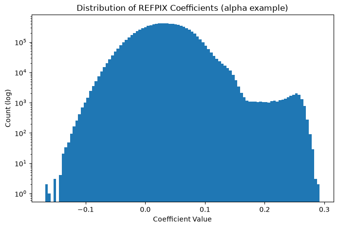
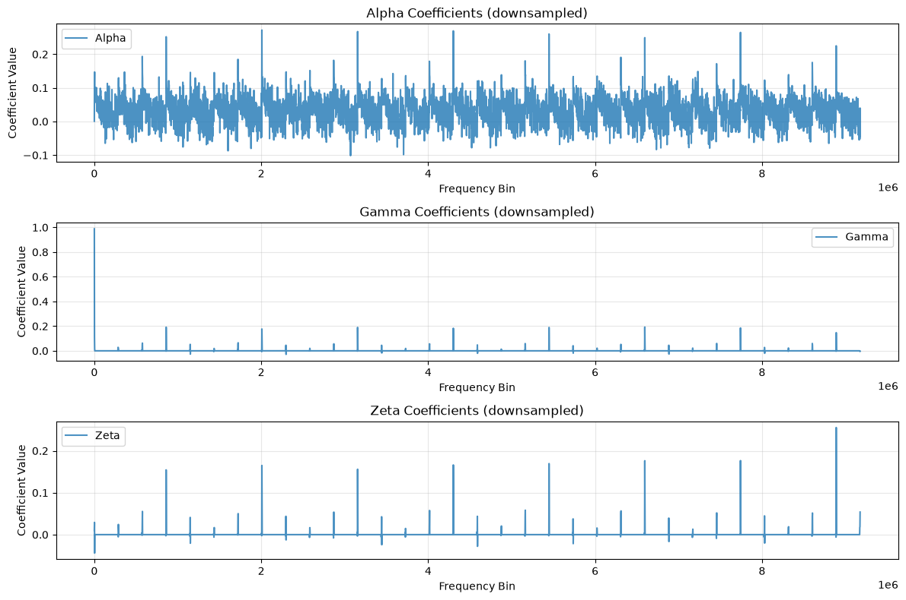

Understanding the Roman WFI Reference Pixel Reference File#
Kernel Information and Read-Only Status#
To run this notebook, please select “Roman Research Nexus {VERSION}” kernel at the top right of your window. For example “Roman Research Nexus 2026.2”.
This notebook is read-only. You can run cells and make edits, but you must save changes to a different location. We recommend saving the notebook within your home directory, or to a new folder within your home (e.g. file > save notebook as > my-nbs/nb.ipynb). Note that a directory must exist before you attempt to add a notebook to it.
Introduction#
The purpose of this notebook is to understand the content and purpose of the Reference Pixel (REFPIX) reference file.
The REFPIX file contains frequency-dependent coefficients used by the refpix step to correct corrects for bias drifts and other low-frequency noise using the reference pixels around the edge of the detector. It leverages the reference pixels (border reference rows/columns and amplifier 33) present in every WFI exposure.
More details about this and other reference files can be found in the Reference File Information.
Local Run Settings#
If you want to run the notebook in your local machine, refer to the information in local installation instructions before proceeding with the notebook. The instructions provide important information about setting up your environment and installing dependencies.
Imports#
Libraries used:
astropy for image normalization
copy for making copies of Python objects
crds for access to calibration reference files
matplotlib and mpl_toolkits for plotting images
numpy for array manipulation
roman_datamodels for opening Roman WFI ASDF files
os for operating system functions
import os
from astropy.visualization import simple_norm
import copy
import matplotlib.pyplot as plt
from matplotlib import colors, colormaps as cm
from mpl_toolkits.axes_grid1 import make_axes_locatable
import numpy as np
import roman_datamodels as rdm
The Calibration Reference Data System (CRDS)#
The reference files, developed and validated by STScI’s Science Operations Center, are continually updated as new WFI data become available. For more information about how CRDS works and how it assigns the most appropriate reference file for each calibration step, refer to the notebook Understanding CRDS and How to Select Calibration Reference files.
IMPORTANT NOTE: Reference files are a work in progress and will be updated several times before Roman launch. If you notice irregularities or missing information, please understand that they may be a known issue. If you have questions, please contact the Roman Help Desk.
import crds
Now let’s dive into this reference file type.
Reference Pixels#
The REFPIX reference file is used in the romancal.refpix.RefPixStep() to remove correlated 1/f noise from the raw data. The correction uses the reference pixels (4-pixel-wide border rows/columns on all four sides and the virtual 33rd amplifier) together with frequency-dependent coefficients stored in this reference file.
The current reference files were derived from TVAC1 data and significantly reduce the 1/f noise (typically by a factor of ~20).
For more details, see the romancal documentation and the technical report on the IRRC algorithm and Rdox documentation for the reference pixel correction.
Before proceeding, let’s check the environmental variables set for CRDS
print(f"CRDS server location: {os.environ.get('CRDS_SERVER_URL')}")
print(f"CRDS context file: {os.environ.get('CRDS_CONTEXT')}")
CRDS server location: https://roman-crds.stsci.edu
CRDS context file: roman-edit
If we want to change the context, we can do it in the next cell. In this case, we choose context roman_0055.pmap.
os.environ['CRDS_CONTEXT']='roman_0055.pmap'
Retrieving Reference Files#
As you run the exposure pipeline, the most up-to-date reference files will be automatically selected for each step. However, if you would like to use a specific reference file, these can be retrieved through the crds Python API.
For the REFPIX files, the required keywords are typically:
ROMAN.META.INSTRUMENT.NAMEROMAN.META.INSTRUMENT.DETECTORROMAN.META.EXPOSURE.START_TIME
These keywords may be combined into a single dictionary to find and download the file using crds.getreferences()
meta = {
'ROMAN.META.INSTRUMENT.NAME': 'WFI',
'ROMAN.META.INSTRUMENT.DETECTOR': 'WFI01',
'ROMAN.META.EXPOSURE.TYPE': 'WFI_IMAGE',
'ROMAN.META.EXPOSURE.START_TIME': '2026-01-01 00:00:00'
}
ref_files = crds.getreferences(meta, reftypes=['refpix'], observatory='roman')
ref_files
{'refpix': '/home/runner/crds_cache/references/roman/wfi/roman_wfi_refpix_0013.asdf'}
Examining Reference Files#
Reference files use roman_datamodels just like WFI science data products. Let’s take a closer look at the REFPIX file:
refpix = rdm.open(ref_files['refpix'])
refpix.info(max_rows=50)
root (AsdfObject)
├─asdf_library (Software)
│ ├─author (str): The ASDF Developers
│ ├─homepage (str): http://github.com/asdf-format/asdf
│ ├─name (str): asdf
│ └─version (str): 3.0.1
├─history (AsdfDictNode)
│ └─extensions (AsdfListNode)
│ ├─0 (ExtensionMetadata)
│ │ ├─extension_class (str): asdf.extension._manifest.ManifestExtension
│ │ ├─extension_uri (str): asdf://asdf-format.org/core/extensions/core-1.5.0
│ │ └─software (Software) ...
│ ├─1 (ExtensionMetadata)
│ │ ├─extension_class (str): asdf_astropy._manifest.CompoundManifestExtension
│ │ ├─extension_uri (str): asdf://astropy.org/core/extensions/core-1.5.0
│ │ └─software (Software) ...
│ └─2 (ExtensionMetadata)
│ ├─extension_class (str): asdf.extension._manifest.ManifestExtension
│ ├─extension_uri (str): asdf://stsci.edu/datamodels/roman/extensions/datamodels-1.0
│ └─software (Software) ...
└─roman (RefpixRef) # Reference Pixel Correction Reference Schema
├─meta (AsdfDictNode) # Common Reference File Metadata Properties
│ ├─author (str): RFP # Author
│ ├─description (str): For RFP Development and DMS Build Support. # Description
│ ├─input_units (IrreducibleUnit): DN
│ ├─instrument (AsdfDictNode)
│ │ ├─detector (str): WFI01
│ │ └─name (str): WFI # Instrument
│ ├─irrc_weight_filenames (AsdfListNode)
│ │ ├─0 (str): /grp/roman/jsanchez/TVAC1_test_files/NOM_OPS/OTP00639_All_TV1a_R1_MCEB/TVAC1_NOM_OPS_WFI_TO (truncated)
│ │ ├─1 (str): /grp/roman/jsanchez/TVAC1_test_files/NOM_OPS/OTP00639_All_TV1a_R1_MCEB/TVAC1_NOM_OPS_WFI_TO (truncated)
│ │ ├─2 (str): /grp/roman/jsanchez/TVAC1_test_files/NOM_OPS/OTP00639_All_TV1a_R1_MCEB/TVAC1_NOM_OPS_WFI_TO (truncated)
│ │ ├─3 (str): /grp/roman/jsanchez/TVAC1_test_files/NOM_OPS/OTP00639_All_TV1a_R1_MCEB/TVAC1_NOM_OPS_WFI_TO (truncated)
│ │ └─96 not shown
│ ├─origin (Origin): STSCI # Institution / Organization Name
│ ├─output_units (IrreducibleUnit): DN
│ ├─pedigree (str): DUMMY # Pedigree
│ ├─reftype (str): REFPIX
│ ├─telescope (Telescope): ROMAN # Telescope Name
│ └─useafter (Time): 2023-01-01T00:00:00.000 # Use After Date
├─gamma (NDArrayType) # Left column correction coefficients
│ ├─shape (tuple) ...
│ └─dtype (Complex128DType): complex128
├─zeta (NDArrayType) # Right column correction coefficients
│ ├─shape (tuple) ...
│ └─dtype (Complex128DType): complex128
└─alpha (NDArrayType) # Reference output correction coefficients
├─shape (tuple) ...
└─dtype (Complex128DType): complex128
Some nodes not shown.
The REFPIX reference file typically contains metadata and arrays of frequency-dependent coefficients (weights) used by the IRRC algorithm for the different reference signals:
alpha: Reference output (amplifier 33) correction coefficientsgamma: Left column correction coefficientszeta: Right column correction coefficients
Let’s check the shape of these arrays:
print("refpix shape information:")
for attr in ['data', 'alpha', 'gamma', 'zeta', 'coefficients']:
if hasattr(refpix, attr):
arr = getattr(refpix, attr)
if arr is not None:
print(f" {attr}: {arr.shape if hasattr(arr, 'shape') else type(arr)}")
refpix shape information:
alpha: (32, 286721)
gamma: (32, 286721)
zeta: (32, 286721)
Now let’s get some basic statistics on the coefficient arrays (example using a representative array):
# Example: inspect one of the coefficient arrays
print("Coefficient statistics:")
for name in ['alpha', 'gamma', 'zeta']:
if hasattr(refpix, name) and getattr(refpix, name) is not None:
arr = getattr(refpix, name)
print(f" {name}: shape={arr.shape}, min={arr.min():.4f}, max={arr.max():.4f}, "
f"mean={arr.mean():.4f}, std={arr.std():.4f}")
Coefficient statistics:
alpha: shape=(32, 286721), min=-0.1678+0.0066j, max=0.2922-0.0378j, mean=0.0321-0.0014j, std=0.0518
gamma: shape=(32, 286721), min=-0.2021+0.0000j, max=0.9886+0.0000j, mean=0.0010-0.0007j, std=0.0158
zeta: shape=(32, 286721), min=-0.0489-0.0434j, max=0.9910+0.0000j, mean=0.0009-0.0006j, std=0.0144
Let’s get a quick histogram of the coefficient values:
if hasattr(refpix, 'alpha') and refpix.alpha is not None:
plt.figure(figsize=(8, 5))
plt.hist(refpix.alpha.flatten(), bins=100, log=True)
plt.xlabel('Coefficient Value')
plt.ylabel('Count (log)')
plt.title('Distribution of REFPIX Coefficients (alpha example)')
plt.show()
/home/runner/micromamba/envs/ci-env/lib/python3.12/site-packages/matplotlib/cbook.py:1810: ComplexWarning: Casting complex values to real discards the imaginary part
return math.isfinite(val)
/home/runner/micromamba/envs/ci-env/lib/python3.12/site-packages/numpy/lib/_histograms_impl.py:853: ComplexWarning: Casting complex values to real discards the imaginary part
indices = f_indices.astype(np.intp)
/home/runner/micromamba/envs/ci-env/lib/python3.12/site-packages/matplotlib/axes/_axes.py:7518: ComplexWarning: Casting complex values to real discards the imaginary part
bins = np.array(bins, float) # causes problems if float16

Now let’s plot a fast visualization example of the REFPIX coefficients
fig = plt.figure(figsize=(12, 8))
# Representative subset (first 5000 bins or all if small)
max_points = 5000
for i, name in enumerate(['alpha', 'gamma', 'zeta']):
if hasattr(refpix, name) and getattr(refpix, name) is not None:
arr = getattr(refpix, name).flatten()
x = np.arange(len(arr))
plt.subplot(3, 1, i+1)
# Downsample for speed if very long
if len(arr) > max_points:
step = len(arr) // max_points
plt.plot(x[::step], arr[::step], label=name.capitalize(), alpha=0.8)
plt.title(f'{name.capitalize()} Coefficients (downsampled)')
else:
plt.plot(x, arr, label=name.capitalize())
plt.title(f'{name.capitalize()} Coefficients')
plt.xlabel('Frequency Bin')
plt.ylabel('Coefficient Value')
plt.grid(True, alpha=0.3)
plt.legend()
plt.tight_layout()
plt.show()
/home/runner/micromamba/envs/ci-env/lib/python3.12/site-packages/matplotlib/cbook.py:1407: ComplexWarning: Casting complex values to real discards the imaginary part
return np.asanyarray(x, float)

We can also plot the full set of coefficient arrays (note generating this plot will take some time)
#plt.figure(figsize=(10, 6))
#if hasattr(refpix, 'alpha') and refpix.alpha is not None:
# plt.plot(refpix.alpha, label='Alpha (Amp 33)', alpha=0.8)
#if hasattr(refpix, 'gamma') and refpix.gamma is not None:
# plt.plot(refpix.gamma, label='Gamma (Left)', alpha=0.8)
#if hasattr(refpix, 'zeta') and refpix.zeta is not None:
# plt.plot(refpix.zeta, label='Zeta (Right)', alpha=0.8)
#
#plt.xlabel('Frequency Bin Index')
#plt.ylabel('Correction Coefficient')
#plt.title('REFPIX Frequency-Dependent Coefficients')
#plt.legend()
#plt.grid(True, alpha=0.3)
#plt.show()
About this Notebook#
Author: R. Diaz
Updated On: 2026-07-06
| Top of page |
|
|